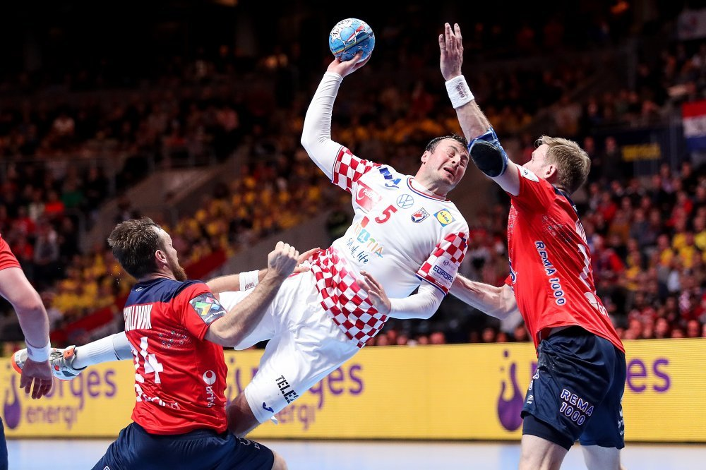

Rukomet je nastao kao izvedena igra s loptom krajem 19. stoljeća u Europi, posebno u Njemačkoj, Danskoj i Švedskoj. Ljudi su igrali različite varijante igre s loptom, ali bez formalnih pravila. Ovi su oblici igre uključivali elemente koji su kasnije oblikovali rukomet.
Razvoj Rukometa
Prva formalna pravila za rukomet napisana su 1917. u Njemačkoj, što je označilo početak organiziranog rukometa kao sporta. Od tada su pravila evoluirala, a rukomet je postao sve strukturiraniji i popularniji.
Profesionalni rukomet

Tijekom 20. stoljeća, rukomet je postao sve popularniji i profesionaliziraniji sport. Organizirana su mnoga nacionalna i međunarodna natjecanja.